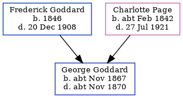

George Stephen Goddard cNov 1867 - c1870
[ Home ] | [ Calendar ] | [ Surnames Index ] | [ Errors ] | [ Family History ]The child of Frederick Goddard (a plumber's labourer) and Charlotte Page (a laundress), George Goddard, the second cousin twice-removed on the father's side of Nigel Horne, was born in Elham, Kent, England c. Nov 18671,2 and baptised in Folkestone, Kent, England on 24 Nov 1867.
He died c. Nov 1870 on Sandy Lane in Folkestone2 and was buried at Christ Church, Folkestone on 2 Jan 18713,4.
Parents
- Frederick Steed was born in 1846
- Charlotte Ann was born c. Feb 1842
Citations
- England & Wales births 1837-2006 - Findmypast
- England & Wales deaths 1837-2007 - Findmypast
- Kent Burials - Findmypast
- England Deaths & Burials 1538-1991 - Findmypast
Media
England & Wales births 1837-2006 - BMD/B/1867/4/AZ/000241/184
England & Wales deaths 1837-2007 - BMD/D/1870/4/AZ/000130/221
England Births & Baptisms 1538-1975 - R_884912275
Kent Baptisms - GBPRS/CANT/B/96011786
Kent Burials - GBPRS/CANT/D/95067548
England Deaths & Burials 1538-1991 - R_276761917
Family Tree
Map
Generated by ged2site. Last updated on Jul 3, 2024